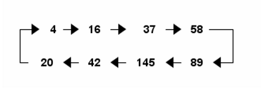

202. Happy Number
Statement
Write an algorithm to determine if a number n is happy.
A happy number is a number defined by the following process:
Starting with any positive integer, replace the number by the sum of the squares of its digits.
Repeat the process until the number equals 1 (where it will stay), or it loops endlessly in a cycle which does not include 1.
Those numbers for which this process ends in 1 are happy.
Return true if n is a happy number, and false if not.
Example 1:
Input: n = 19
Output: true
Explanation:
12 + 92 = 82
82 + 22 = 68
62 + 82 = 100
12 + 02 + 02 = 1
Example 2:
Input: n = 2
Output: false
Constraints:
1 <= n <= 2^31 - 1
Solution
Intuition
Check the outputs for some integers. This is actually a mathematical loop. Take any positive integer n and sum the squares of its digits. If you repeat this operation, eventually you’ll either end at 1 or cycle between the eight values 4, 16, 37, 58, 89, 145, 42, and 20.

Approach
Calculate the sum of squared digits until its 4 or 1
returnFalseif its 4returnTrueif its 1
Complexity
Time complexity:
O(x*log(n)), wherexis iterations to reach 1 or 4Space complexity:
O(1)
Code
class Solution:
def isHappy(self, n: int) -> bool:
while n != 4:
next_num = 0
while n > 0:
next_num += (n % 10) ** 2
n //= 10
n = next_num
if n == 1: return True
return False